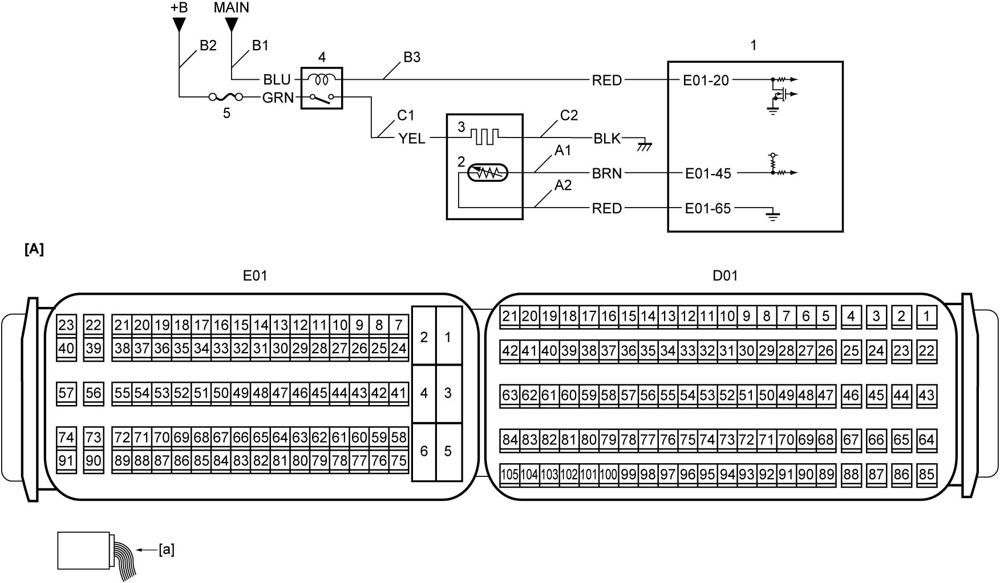

1A
| Fuel Heater Operation Check |
Circuit Diagram

 "Expand image")
| [A]: | ECM connector (View: [a]) | B3: | Fuel heater relay drive circuit | 3. | Fuel heater |
| A1: | Fuel temperature sensor signal circuit | C1: | Fuel heater power supply circuit | 4. | Fuel heater relay |
| A2: | Fuel temperature sensor ground circuit | C2: | Fuel heater ground circuit | 5. | “FUEL HTR” fuse |
| B1: | Fuel heater relay power supply circuit (coil side) | 1. | ECM | ||
| B2: | Fuel heater relay power supply circuit (switch side) | 2. | Fuel temperature sensor |
Troubleshooting
| Step | Action | Yes | No |
|---|---|---|---|
| 1 |
Output test
1)When ignition is “OFF”, connect SUZUKI scan tool to DLC.
2)Set ignition “ON”.
3)Check that “Fuel Temperature” displayed on SUZUKI scan tool is lower than 30 °C (86 °F).
4)Select “Fuel Heater” function in “Active Test” mode on SUZUKI scan tool.
5)Check that “Fuel Temperature” displayed on SUZUKI scan tool is higher than fuel temperature measured at Step 3).
Is check result OK?
|
End.
|
Go to Step 2.
|
| 2 |
Fuel heater relay power supply check
1)Remove fuel heater relay.
2)Check for proper connection to fuel heater relay.
3)If connections are OK, set ignition “ON”.
4)Check that voltage between each of “B1” and “B2” circuits and ground is battery voltage.
Is check result OK?
|
Go to Step 3.
|
Repair “B1” and/or “B2” circuit.
|
| 3 |
Fuel heater relay drive circuit check
1)When ignition is “OFF”, disconnect “E01” connector from ECM.
2)Check for proper terminal connection to “E01” connector.
3)If connections are OK, check the following points.
•Resistance of “B3” circuit: less than 1 Ω
•Resistance between “B3” circuit and ground: infinity •Resistance between “B3” circuit terminal and other terminal at fuel heater relay connector: infinity •Voltage of “B3” circuit: approx. 0 V (When ignition is “ON”) Is check result OK?
|
Go to Step 4.
|
Repair “B3” circuit.
|
| 4 |
Fuel heater relay check
1)Check fuel heater relay.
Is check result OK?
|
Go to Step 5.
|
Replace fuel heater relay.
|
| 5 |
Fuel heater relay drive circuit check
1)When ignition is “OFF”, connect “E01” connector to ECM.
2)Check that voltage between “B3” circuit and ground is approx. 0 V using “Fuel Heater” function in “Active Test” mode on SUZUKI scan tool.
Is check result OK?
|
Go to Step 6.
|
Replace ECM and recheck fuel heater operation.
|
| 6 |
Fuel heater power supply circuit and ground circuit check
1)When ignition is “OFF”, install fuel heater relay.
2)Disconnect connector from fuel heater.
3)Check for proper connection to fuel heater.
4)If connection is OK, check that voltage between “C1” circuit and “C2” circuit is battery voltage using “Fuel Heater” function in “Active Test” mode on SUZUKI scan tool.
Is check result OK?
|
Go to Step 8.
|
Go to Step 7.
|
| 7 |
Fuel heater ground circuit check
1)Check that voltage between “C1” circuit and ground is battery voltage using “Fuel Heater” function in “Active Test” mode on SUZUKI scan tool.
Is check result OK?
|
Repair “C2” circuit and go to Step 8.
|
Repair “C1” circuit.
|
| 8 |
Fuel heater check
1)Check fuel heater.
Is check result OK?
|
Replace ECM and recheck fuel heater operation.
|
Replace fuel heater.
|